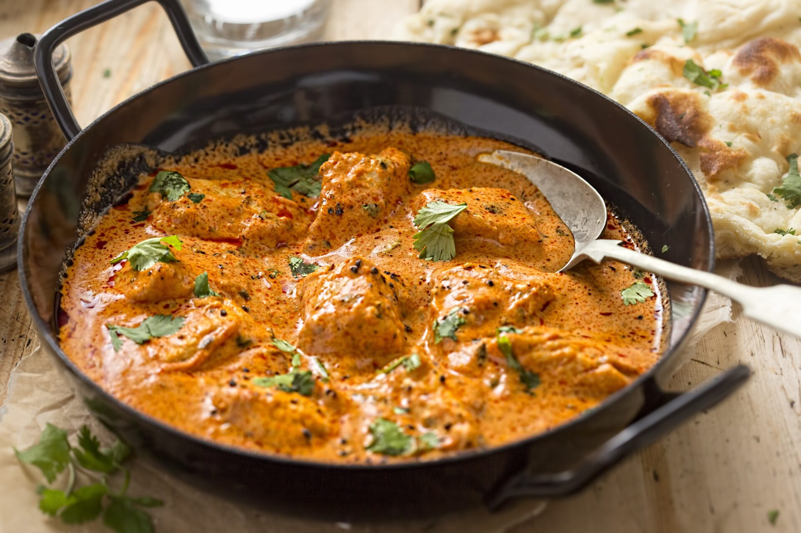

Butter Chicken(Murgh Makhani): The OG mvp of Indian Cuisines

Description
Butter Chicken is a rich, creamy, and slightly smoky North Indian curry made from grilled or tandoori chicken that's simmered in a luscious tomato, butter, and cream-based gravy. It was accidentally invented in the 1950s at Moti Mahal Restaurant in Delhi, when leftover tandoori chicken was tossed into a tomato-butter-cream sauce to avoid food waste—and boom, culinary history was made.
Now it'’'s a global legend. You'’'ll find it in fine dining restaurants, street food joints, weddings, takeouts, and even on airplane menus. It'’'s the dish that converts curry-haters into curry-addicts.
What makes it special?
The magic of Butter Chicken lies in the balance. It'’'s rich but not greasy, spicy but not fiery, tangy but not sour. Unlike many Indian curries, this one has a smooth, velvety texture with a hint of sweetness that perfectly complements the bold spices and charred flavor of the chicken.
And let's not forget the holy trio:
- Butter
- Cream
- Smoked tandoori chicken
Chef's kiss
Ingrediants you will need
For the Chicken Marinade:
For the gravy
- Butter - 2-3 tbsp (don't hold back, it's called butter chicken for a reason)
- Tomatoes - 3 large (roughly chopped or pureed)
- Cashews - 10-12 (soaked)
- Ginger-garlic paste - 1 tbsp
- Fresh cream - ¼ cup
- Red chili powder - 1 tsp
- Coriander powder - 1 tsp
- Garam masala - ½ tsp
- Kasuri methi (crushed fenugreek) - 1 tsp
- Salt - to taste
- Sugar - ½ to 1 tsp (to balance acidity)
How to make Butter Chicken: Step-by-Step
Step 1: Marinate the chicken
Mix chicken with yogurt, lemon juice, spices, and garlic-ginger paste. Let it soak in the goodness for at least 1 hour (overnight if you're going full beast mode).
Step 3: Cook the chicken
- Grill it on a pan, in the oven, or air fryer until charred and cooked.
- Set it aside. Try not to eat half of it before it goes into the gravy.
Make the Gravy Base
- Heat 1 tbsp butter in a pan.
- Add ginger-garlic paste. Sauté until the raw smell’s gone.
- Add chopped tomatoes and cashews. Cook until tomatoes break down.
- Let it cool slightly, then blend into a silky-smooth puree.
Step 4: Assemble the Gravy
- In a clean pan, heat 2 tbsp butter.
- Add the puree and cook for 5-6 mins until thick.
- Add chili powder, coriander powder, garam masala, salt, and sugar.
- Add ¼ cup cream and a splash of water/milk to adjust consistency.
- Add your cooked chicken. Let it simmer in the gravy for 5-7 minutes.
- Finish with kasuri methi and a swirl of cream.
Step 5: Serve & Conquer
- Serve hot with butter naan, garlic naan, roti, or steamd basmati rice
- garnish with coriander, extra cream, or a a drizzle of melted butter
Ingrediants Breakdown (Dum style Biryani)
For the chicken marinade:
- Chicken - 500g (bone-in thigh pieces = best flavor)
- Yogurt/curd - ½ cup
- Ginger-garlic paste - 1½ tbsp
- Red chili powder - 1 tsp
- Turmeric powder - ½ tsp
- Garam masala - 1 tsp
- Lemon juice - 1 tbsp
- Salt - to taste
- Oil - 1 tbsp
- Fresh coriander + mint - chopped (a handful)
Marinate for at least 1 hour (overnight = flavour overkill, in the best way)
Home